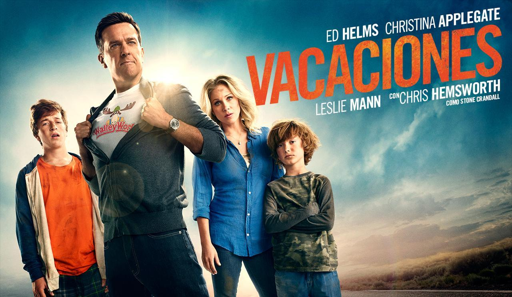
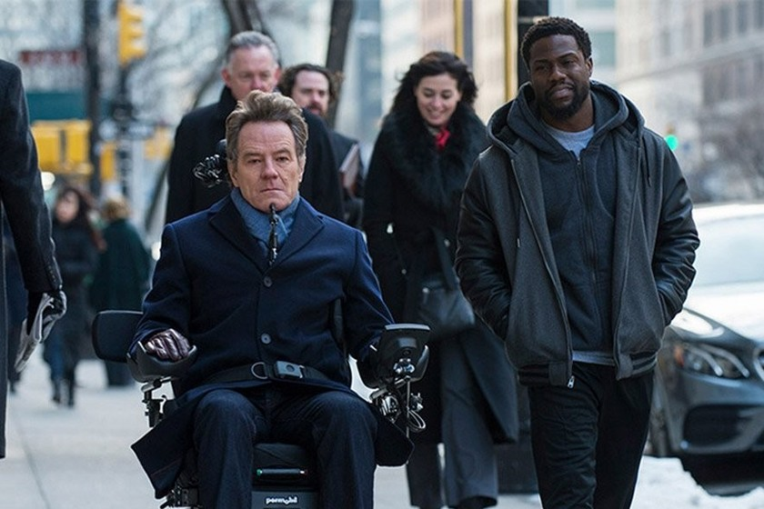
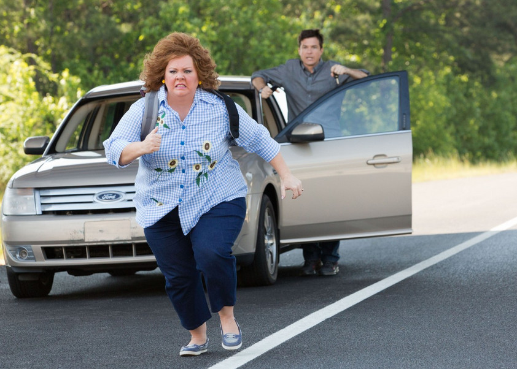
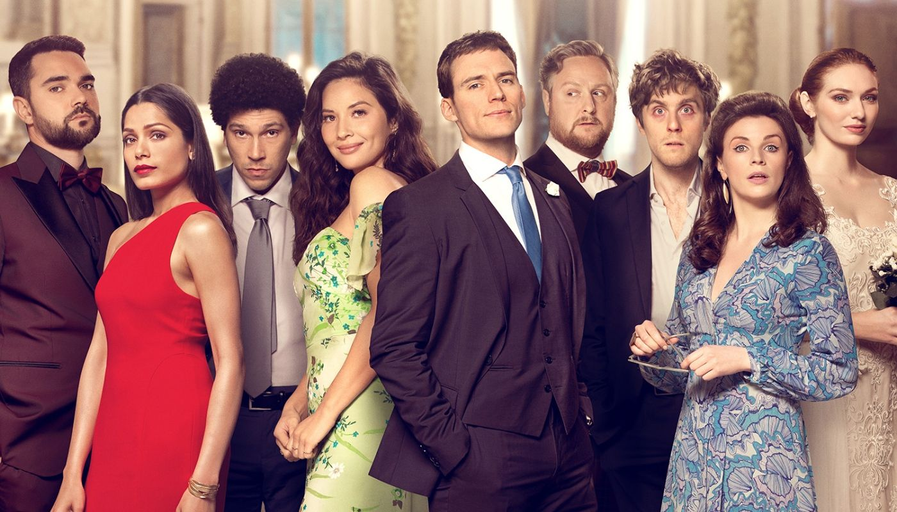

Esta película de comedia/acción empieza cuando Rusty Griswold (Ed Helms) quiere fortalecer los lazos de su familia, repitiendo el viaje que hizo de vacaciones cuando era niño. Acompañado de su esposa Debbie (Christina Applegate) y sus dos hijos Jack (Skyler Gisondo) y Kevin (Steele Stebbins), cruzan todo Estados Unidos para ir al parque de atracciones favorito. Pero, no todo sale como esperaba.
6. Amigos intocables (2011)

La vida de un hombre llamado Philippe de la alta sociedad cambia cuando tiene un accidente que lo deja inválido y en silla de ruedas. No puede hacer nada por sí mismo, por lo que contrata a una persona que lo ayude a moverse y cuidar de él dentro de su casa. Quien queda a su cargo es Driss, un joven de color que acaba de salir de la cárcel y necesita dinero. Poco a poco aprenden a llevarse bien y a mezclar sus gustos, formando una gran amistad. Ganó nueve premios entre ellos Premio César al Mejor Actor y el Premio Goya a la Mejor Película Europea.
7.Como ser soltera (2016)
Este romance/comedia muy entretenido, dirigido por Christian Ditter, comienza cuando Alice termina la universidad y decide terminar con su novio de años Josh, para conocer a más personas y descubrir quién es. En su llegada a Nueva York conoce a su nueva compañera de trabajo Robin, quien le muestra los secretos de Nueva York, y especialmente a como ser soltera.
8.Ladrona de identidades (2013)

Una divertida película protagonizada por Jason Bateman y Melissa McCarthy, que trata sobre una compradora compulsiva que lleva una vida de lujos en las afueras de Florida, compra todo lo que quiere a nombre de Sandy Bigelow Patterson, un hombre a quien Diana le roba su identidad. Cuando él se da cuenta de lo que está sucediendo persigue a Diana para confrontarla y llevarla a la policía antes de que arruine todo y manche su nombre. Nominada en los Teen Choice Award a la Mejor Película de Comedia.
9.Loco y estúpido amor (2011)
Nominada a mejor comedia, esta clásico del cine trata sobre al Weaver, un cuarentón (Steve Carell) que tiene una vida perfecta; un buen trabajo, una casa bonita, hijos excelentes, y una hermosa esposa. Pero un día todo eso se derrumba cuando descubre que su perfecta esposa le ha sido infiel y quiere divorciarse. Con ayuda de Jacob Palmer, Cal decide entrar al mundo de las citas románticas y ser exitoso con las mujeres. La actriz Emma Stone ganó tres premios a la mejor actriz por esta película.
10.Amor. Boda. Azar (2020)

Un remake de la comedia romántica francesa “Plan de Table”, dirigida por Dean Craig, aquí el protagonista Sam Claflin enfrenta dos versiones diferentes de lo que puede suceder en la boda de su hermana. Tendrá que lidiar con problemas como su ex novia desenfrenada, una pastilla para dormir en el lugar incorrecto y un invitado con un secreto que nadie esperaba. La película fue lanzada el 10 de abril de 2020 por Netflix.